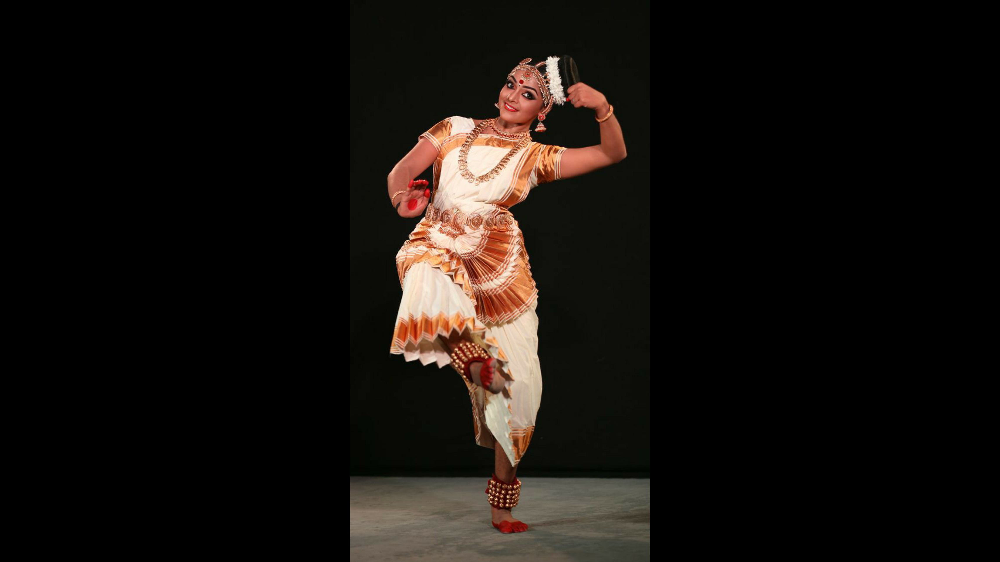

Dance Forms
Dance is an eloquent form of expression. From classical and traditional to folk and tribal, there are various dance forms in India. The most popularly recognised classical dance forms are eight, which find themselves steeped in a rich mythological and religious history and have been mentioned in the ancient Hindu text of Natya Shastra. These are Bharat Natyam (Tamil Nadu), Sattriya (Assam), Manipuri (Manipur), Kathak (northern and western India), Odissi (Odisha), Kuchipudi (Andhra Pradesh and Telangana), Kathakali (Kerala), Mohiniyattam (Kerala).
Bharat Natyam
Considered to be the oldest dance and an inspiration to all other styles, Bharat Natyam, a temple dance of Tamil Nadu, is an enchanting performance that relates scenes from religious texts and myths. In a series of quick and complicated neat motions, dancers dressed in vibrant attires and ornamented heavily from head to toe, execute moves that are a sight to behold.
Sattriya
A dance-drama performance, native to Assam, Sattriya dance was created in the 15th century and has been a living tradition since. A regale of religious sagas, it is generally performed in monasteries, where the dancers dressed in stunning pat silks and adorned with traditional Assamese jewellery weave magic to the beats of cymbals, drums, flutes and even harmonium and violin.

Manipuri
Manipuri dance, originating from the state of Manipur, is a spiritual experience that transcends art and seems more like a divine dance. Mostly revolving around Goddess Radha and Lord Krishna, this soft, mild and modest dance form sees dancers execute graceful and delicate movements to lyrical undertones. While the women wear skirt (sarong).

Kathak
Said to have introduced by the bards travelling around the regions of north India, Kathak involves the recounting of religious tales and legends in a rhythmic fashion. From tapping of feet and hand gestures to eye movements and facial expressions, Kathak leaves one reeling with wonder at the finesse and skill of the dancers clad in a long embroidered skirt complemented with a choli.
Mohiniyattam
Mohiniyattam is a gentle, graceful and feminine form of dance that originated in the state of Kerala. The dance derives its name from the word 'Mohini', which means the female avatar of Lord Vishnu. Usually performed by a solo female dancer, the performance emotes a play through music and elegant movements. The song is generally a mix of Sanskrit and Malayalam languages.
Kuchipudi
Largely featuring scenes and stories from the life of Lord Krishna, Kuchipudi, from Andhra Pradesh and Telangana, is essentially a temple dance. While a female dancer wears a pleated sari that opens like a hand fan, a male dancer is clad in a dhoti. The dancers are adorned with traditional jewellery and dance to the rhythmic beats of cymbals, flute, veena, tambura etc.